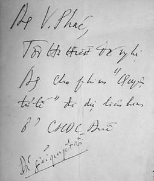

- Anh chú ý nghe này, 3 giờ chiều chủ nhật này, trên đường Bách Thảo, một cái xe ô tô màu trắng mang biển số ngoại giao đỗ bên phải đường, cốp đằng sau xe mở, tôi đứng trên hè quay lưng lại hút thuốc. Bằng mọi cách anh ném cái thùng phim vào trong cốp xe và đừng để ai trông thấy. Xong rồi anh biến đi, mọi việc để đấy tôi...
☆
Các đoàn đại biểu rất mong bộ phim “Chuyện Tử Tế” đến Liên hoan phim của họ, nhưng bộ phim bị giấu đi. Người ta cố gắng ỉm đi sao cho thật khéo, thật gọn.
Tôi chẳng có quyền gì về việc này, mặc dù bộ phim đó đã được nhà nước làm ra mấy chục bản gửi đi mấy chục tỉnh thành, cho công chiếu từ Bắc chí Nam nhưng lại có một cái lệnh rất quái gở là không cho nó xuất ngoại. Họ cũng không cho tôi được gặp gỡ, tiếp xúc với các đoàn đại biểu. Công an luôn luôn theo dõi. Thời kỳ đó nghiệt ngã không từ gì có thể tả nổi. Nhiều khi chẳng phải suy xét gì nhiều, chẳng cần một hội đồng để tham vấn cân nhắc để đi đến kết luận cuối cùng; lệnh của cấp trên chỉ là một ông nào đấy cầm điện thoại lên là xong.
Các đoàn đại biểu quốc tế rất bức xúc. Ðoàn Ðông Ðức đòi hỏi gắt gao bằng cách nào để bộ phim ấy tới được Leipzig. Tại sao họ khát khao như thế? Lúc đầu tôi tưởng họ thấy một tác phẩm khác lạ hay có một điều gì đấy mà họ tìm kiếm được sự đồng cảm hay chia sẻ. Hai năm sau tôi mới hiểu.
Khi đó đoàn đại biểu của Liên hoan phim Leipzig xin phép Ban tổ chức cho tôi ra bờ sông Hàn với một một cô gái Ðức trong đoàn để chụp ảnh. Ban tổ chức không muốn có sự tiếp xúc nhưng họ bàn với nhau là ông Thủy chỉ biết tiếng Nga thôi vì học ở Nga về, cũng biết một chút ít tiếng Pháp còn đoàn của Ðức lại chỉ biết tiếng Ðức nên ra bờ sông Hàn để chụp ảnh cũng không có gì “đáng ngại” lắm. Về ngôn ngữ mà nói, không thể đàm thoại với nhau một chuyện gì mang tính chất như kế hoạch hay âm mưu gì cả, nên tôi đã được ra bờ sông Hàn để chụp ảnh với cô gái đó.
Nhưng đến bây giờ tôi phải nói thật là đám công an theo dõi và Ban tổ chức cũng không biết cô này là người Nga và càng không biết cô này là bạn học của tôi thời kỳ học ở Nga. Cô học ở trường Ðiện ảnh Quốc gia toàn Liên bang, khoa Kinh tế Chủ nhiệm. Sau khi tốt nghiệp, cô lấy lấy chồng người Ðông Ðức, và người chồng cũng học cùng với tôi.
☆
Sau khi cưới, cô ấy theo chồng về sống ở Ðức. Hai vợ chồng làm việc ở bộ phận điện ảnh trong Ban tổ chức của Liên hoan phim Quốc tế Leipzig và cô ấy từ Ðức sang Việt Nam với tư cách đại diện cho Liên hoan phim Leipzig. Ai cũng nghĩ cô ấy là người Ðức.
Ðúng là loài “Thủy quái”. Hắn không làm phim truyện mà chuyện gì của hắn cũng như... phim!
Khi ra đến bờ sông Hàn, cô ấy đã nói với tôi tất cả những điều cần nói:
- Trời ơi, tôi không thể tưởng tượng được, bằng ấy năm đã qua đi kể từ khi chúng ta chia tay ở trường Ðiện ảnh Quốc gia toàn Liên bang, giờ mới gặp lại và thấy bạn làm được một bộ phim như thế, trước đó bạn còn bao nhiêu phim nữa. Tôi thực sự vô cùng cảm động. Tôi không biết nếu ông Roman Karmen còn sống và xem bộ phim này thì ông nghĩ gì? Tôi chỉ nói ngắn gọn rằng chúng ta không có nhiều thì giờ và người ta không cho chúng ta được gặp gỡ, được nói chuyện thoải mái cho nên tôi chỉ nói vắn tắt là chúng tôi đã hội ý trong đoàn là bằng mọi cách bộ phim này phải có mặt ở Leipzig.
Tôi trả lời:
- Vậy thì tốt quá, tôi rất cảm ơn.
Nhưng để chuyển một bộ phim nhựa 35mm gồm 5 cuốn phim, mỗi cuốn 300m, nặng 2,3 kg cùng với một hộp sắt; 5 cái hộp đó lại để trong một cái thùng sắt nữa tức là khoảng 20kg, thật không dễ dàng.
Vấn đề đầu tiên là làm sao để có được bản phim ấy!
Trên nguyên tắc, một bản phim đưa đi Liên hoan phim Quốc tế phải là bản phim chưa qua lửa tức là chưa chiếu lần nào và không bị xước. Thứ hai là thủ tục hải quan giải quyết thế nào? Giấy phép ở đâu ra? Ðấy là những chuyện không thể tưởng tượng được.
Tôi nói với cô gái:
- Tôi cảm ơn lòng tốt của các bạn. Tôi đã đến Leipzig nhiều lần rồi và bộ phim đầu đời của tôi đã đoạt giải ở đấy. Một nơi đầy kỷ niệm. Bộ phim “Phản Bội” 1980 cũng chiếu ở đấy, tôi cũng rất muốn bộ phim này có mặt ở đó nhưng người ta không cho nó xuất ngoại. Chỉ chiếu cho các bạn xem mà đã khó khăn thế nào thì bạn biết đấy .
Cô gái bảo: “ Không, tôi chỉ nói ngắn gọn với bạn là bằng mọi cách bạn phải làm được một việc là có trong tay bản phim đó còn bằng cách nào thì tôi không biết, tôi không thể khuyên và bàn cách với bạn. Còn việc chuyển bản phim ấy đi thế nào, thì bạn liên lạc với Rugerd – tùy viên văn hóa sứ quán Ðông Ðức tại Hà Nội. Anh ấy sẽ lo việc chuyển bộ phim đấy đi ”.
Tôi nói: “Tôi cảm ơn bạn, cho tôi gửi lời chào thân ái tới chồng bạn và bảo rằng Thủy nó vẫn làm việc. Có dịp nào qua bên đó tôi sẽ gặp hai bạn chứ tại đây chúng ta nói chuyện dài không tiện, thứ hai nữa là tôi chẳng hứa được điều gì, tất nhiên tôi sẽ cố gắng bằng mọi cách để làm theo hướng dẫn của bạn và mặc dù tôi biết đấy là điều cực kỳ khó khăn ”.
Một tỷ câu hỏi trong đầu tôi. Lấy bản phim ở đâu? Liên lạc với Rugerd và chuyển bản phim đó đi như thế nào? Không sớm thì muộn người ta cũng biết rằng tôi là thủ phạm của việc để bộ phim đó ra nước ngoài. Hơn nữa chắc gì đã được giải, như bài báo đó nói “256 phim từ 40 nước trên thế giới”. 256 phim một giải vàng, hai giải bạc. Xác suất tôi đoạt giải là bao nhiêu?
Ðược giải hay không được giải, hoàn toàn không phải ở cái danh. Vấn đề ở chỗ khắc nghiệt hơn nhiều: Nếu phim không được giải thì tôi đi tù! Ðiều đấy là chắc chắn. Sau gót chân tôi là vực thẳm. Một chuyện cực kỳ phiêu lưu ở đất nước này.
Vào tháng 3 năm 1988, nhân kết thúc Liên hoan phim Ðà Nẵng, anh em rủ nhau đi xuyên Việt vào miền Trung, miền Nam, rồi vào Sài Gòn. Chúng tôi đi khắp các địa phương có thắng cảnh, có bạn hữu, có khán giả yêu mến phim ảnh để chiếu cho người ta xem, để tâm sự, tiếp xúc với khán giả, để hiểu hơn cuộc sống của đồng bào. Trong chuyến đi ấy, đầu óc tôi cứ rối bời với ý nghĩ bằng cách nào để có thể kiếm được một bản phim. Cuối cùng cũng chẳng làm được điều gì hơn là về Hà Nội.
Ðến giữa năm 1988, tôi nghĩ rằng phải trở lại Sài Gòn và đồng bằng sông Cửu Long thăm anh em, bạn bè. Nói gì thì nói, dân miền Nam rất chịu chơi, không hèn, không so đo vặt vãnh. Nhớ lại, có lần tôi cùng Lưu Hà quay phim ở Mỏ Cày, đi thuyền trên sông, mấy cậu tự vệ vác súng chạy theo trên bờ và bắn bùm! bùm! bắt phải quay mũi thuyền và lên bờ. Chúng tôi đành phải làm theo lệnh. Họ bảo “vô đây” rồi “áp giải” chúng tôi vào một cái lều. Thì ra bọn họ đang uống rượu, và chúng tôi phải theo lệnh: “Dzô! Nhậu!”.
Theo lệnh của Tổng bí thư, “Chuyện Tử Tế” và “Hà Nội Trong Mắt Ai” được chiếu rộng rãi cho nên bản phim nằm ở kho phim của tất cả các tỉnh.
Vào giữa năm 1988 tôi đi bằng xe lửa vào Nam. Không mua được vé ở ga, tôi lên tàu nói với người trưởng toa là cho mua vé. Nhưng mua vé xong thì không có chỗ, chỗ nằm không mà chỗ ngồi cũng không. Thế là người ta cọ sạch một cái toilet rồi bắc một tấm ván cho tôi qua đêm. Cái toa lét hẹp, nằm gác chân lên cửa sổ thì bị cành cây quật vào đau điếng, co chân lại một lúc thì mỏi. Rồi mùi chua loét từ toa ăn phả ra; cánh cửa không chốt vào được mà cũng không mở hẳn được ra, cứ bập bình bập bình hắt ánh sáng vào mặt. Ðến 2 giờ sáng, có một người đứng ở ngoài, nhìn chằm chằm vào tôi đang nằm co ro và hỏi:
- Anh có phải là anh Thủy không?
Tôi chột dạ. Những người bị theo dõi đều có sự ám ảnh kinh hoàng. Tôi nghĩ bụng “sao nó lại biết được?” Tôi bảo:
- Ơ, thế anh hỏi làm gì nhỉ?
Tôi không dám nhận và không dám chối vì không biết người này là thế nào. Anh ta nói:
- Ðúng mà, tuần trước anh đến nói chuyện ở Câu lạc bộ Ðường sắt, chiếu phim và nói chuyện cho anh em nghe, hôm đấy em cũng đến dự. Các anh lãnh đạo Tổng Cục đang đi trên đoàn tàu này, các anh ấy đi kiểm tra. Mà tại sao anh lại nằm khổ thế này, để em lên báo cáo với các anh ấy.
Mấy ông xồng xộc chạy xuống...
Sau đó tôi được đưa lên toa trên. Cơm bưng nước rót...
Tàu xập xình về đến Sài Gòn và các ông ấy giao tôi cho anh em Ðường sắt: “ Ðưa anh Thủy đến nhà khách của Tổng Cục, lo ăn nghỉ tử tế những ngày anh ở đây, xong việc thì chở anh ấy ra - đây là thượng khách của Tổng Cục ”.
☆
Trong những ngày ở miền Nam, nhờ sự giúp đỡ của một người bạn chịu chơi, tôi đã có bản phim. Ðấy là bản phim tốt nhất, chưa chiếu lần nào. Giờ đây tôi vẫn chưa thể công khai nói người bạn đó là ai.
Nhân đây cho tôi gửi bức thư ngỏ tới người bạn thân thiết năm xưa.
“Bạn T. thân,
Vậy là đúng một phần tư thế kỷ qua đi, từ năm 1988, khi đó vì quí tôi và hồn nhiên tin tôi, bạn đã tìm bằng được một bản phim “Chuyện Tử Tế” tốt nhất, kín đáo trao cho tôi để tôi chuyển đi Leipzig cuối năm đó. Tôi muốn ngàn lần cám ơn bạn, tôi muốn thay mặt hàng triệu khán giả truyền hình, các Liên hoan phim, hội thảo, các Ðại học Quốc tế cám ơn bạn. Tôi không (hay chưa) được kêu tên bạn trong bức thư ngỏ này vì e rằng có những phiền lụy trên trời rơi xuống đầu bạn. Cuộc đời bạn lận đận đã đủ rồi. Tận tình và trong sáng, yêu nghề và yêu người đủ rồi. Bạn đã liều lĩnh giúp tôi một việc nguy hiểm nhưng vô cùng quan trọng, có ích cho cộng đồng, cho đất nước chúng ta mà không chờ đợi một lợi lộc gì. Cũng cho phép tôi tâm sự với bạn rằng, vì tình riêng với nhau bạn đã lượng thứ cho tôi nhiều điều, bạn cũng biết rằng nếu “Chuyện Tử Tế” không được giải, tôi khó trở về nước, về nước tôi ngồi tù. Phim được giải tôi chẳng nhận được gì. Tôi phải lo chạy trốn. Phim bán bản quyền tứ xứ, tôi không được nhận xu nào. Ngẫm ra đó chỉ là cuộc chơi, cuộc chơi kỳ diệu của chúng ta như có thần linh dẫn dắt che chở, phải không? Có thể nói không quá đáng rằng đó là cuộc chơi của những người tử vì đạo, đạo làm nghề.
Bạn thân mến, thời gian thấm thoắt trôi đi và chúng ta đã về già rồi, phải không, nhưng tôi vẫn nhớ bạn, gia đình bạn với tấm lòng tha thiết, với lời cầu chúc bằng an tự đáy lòng...
Và như vậy, nếu bạn đọc cuốn sách này, phần nói về “Chuyện Tử Tế” bay đi Leipzig, bạn sẽ thấy rằng người phải cám ơn bạn không chỉ có Trần Văn Thủy...”
☆
Anh em đi làm phim nhựa bao giờ cũng có một cái thùng sắt để đồ đạc, tiền bạc. Tôi cất phim vào thùng rồi lên tàu ra Bắc.
Cầm trong tay bản phim rồi tôi mới nghĩ đến chuyện làm sao để nó đến được Leipzig. Nói thật lòng, cho đến bây giờ những anh em tham gia làm phim với tôi cũng không ai biết nó đã “vượt biên” như thế nào, đến như Lê Văn Long, quay phim, còn đoán là tôi mượn bản phim này của Việt kiều.
Công an theo dõi từng bước đi, từng mối quan hệ của tôi. Không ai dám làm những việc phiêu lưu như thế này. Thời kỳ đó một băng cát sét mang qua biên giới cũng phải có giấy phép.
Tôi không tìm kiếm gì cho bản thân mình, tôi làm việc này không phải để lợi lộc, để nổi tiếng, để có tiền. Cái chính là tôi thấy nó phải như thế, nó có ích cho đất nước này. Khi làm phim không bao giờ tôi nghĩ đến để được thưởng, được lên lương, hay được đề bạt, tôi chỉ làm cho thỏa lòng mình. Nhiều người nghĩ rằng tôi nói như thế là đạo đức giả.
Hôm vừa rồi có một đạo diễn trẻ người Mỹ đến hãng phim của tôi nói chuyện với giám đốc hãng phim. Giám đốc hãng phim hỏi: “Khi bắt đầu làm một bộ phim, với anh điều gì là quan trọng nhất? Người xem, tiền bạc, tiếng tăm, danh vọng?” Cậu đạo diễn nói: “Tất cả đều cần.”
Còn tôi khi bắt đầu làm phim, tôi chỉ muốn biết một điều duy nhất: Người đời xem có sướng không? Chưa bao giờ tôi làm phim xong để cấp trên bằng lòng, để đúng đường lối, để được thưởng hay được tặng danh hiệu gì đó. Tuyệt đối tôi không nghĩ đến điều đó – tôi nói điều này trước bàn thờ gia tiên. Tôi ăn ở thế nào thì trời lại cho tôi thế đó thôi.
☆
Hồi đó tôi ở 52 Hàng Bún. Nhà tôi lúc nào cũng có công an gác 2 phía là phố Hàng Bún và ngõ Yên Ninh.
Tôi đến một máy điện thoại lạ, quay vào số của Rugerd. Tôi không biết tiếng Ðức nhưng may là anh ta thông thạo tiếng Việt.
- Rugerd à, khỏe không?
- Thủy đấy à, khỏe lắm!
- Buồn quá, lâu ngày không gặp nhau, muốn ra ngoài để xả stress một tý hoặc ngồi đâu với nhau để thư giãn một tý, hay đi uống café đi.
- Ừ, đi uống café.
Thời kỳ đó đi với một người nước ngoài cũng đã có vấn đề, đã là mạo hiểm rồi. Chúng tôi ngồi ở chỗ vắng vẻ uống café với nhau trên phố Bà Triệu. Ðấy là quán của họa sĩ Ngọc Linh, cũng làm việc trong ngành Ðiện ảnh. Ngồi uống nước, nói chuyện và quan sát một lúc, thấy bình thường, tôi nói:
- Có bản phim rồi.
- Ồ, tuyệt vời.
- Tôi chỉ muốn báo với anh như thế thôi còn làm cái gì tiếp theo thì theo lời của mấy người ở Liên hoan phim Leipzig là do anh quyết định.
- Cứ yên tâm, người Ðức chúng tôi không biết có tài giỏi gì không nhưng làm việc cực kỳ chính xác.
- Hôm sau đi uống café thì tôi sẽ nói với anh cụ thể là nên như thế nào.
Một buổi khác, lại đi uống café, lại ngồi nói chuyện trên trời dưới đất rồi nhìn ngang nhìn ngửa xem có ai theo dõi.
- Anh chú ý nghe này, 3 giờ chiều chủ nhật này, trên đường Bách Thảo, một cái xe ô tô màu trắng mang biển ngoại giao đỗ bên phải đường, cốp đằng sau xe mở, tôi đứng trên hè quay lưng lại hút thuốc. Bằng mọi cách anh ném cái thùng phim vào trong cốp xe và đừng để ai trông thấy. Xong rồi anh biến đi, mọi việc để đấy tôi.
Cứ như chuyện trinh thám vậy. Tôi ngồi xe máy Honda 82 từ Hàng Bún lên. Thùng phim đặt đằng sau không buộc. Xe qua cổng đỏ Phủ Chủ Tịch. Ðường Bách Thảo 3 giờ chiều chủ nhật rất vắng. Xa xa một chiếc xe hơi màu trắng đỗ bên đường, cốp đằng sau mở, một người đứng trên hè quay lưng lại, có vẻ như đang hút thuốc.
Khi đến gần chừng 15-20m, thấy một vài người từ dốc Ngọc Hà đi ngược lại tôi bèn rồ ga phóng thẳng đi. Ðến chỗ rẽ xuống dốc Ngọc Hà tôi vòng xe trở lại và quan sát, thấy đường vắng tanh. Tôi đi với tốc độ đều đều, tay phải giữ ga, tay trái - tôi vốn thuận tay trái - ném cái thùng nặng trịch vào trong cốp xe.
☆
...Trần Văn Thủy chỉ làm phim tài liệu, nhưng những tình huống oái oăm xảy ra khi quay và số phận chìm nổi của nó sau khi ra đời lại có thể là kịch bản của một cuốn phim truyện dày dặn.
☆
Những bộ “phim truyện” này nếu thực hiện cũng sẽ có mở có thắt, có cao trào có bùng nổ, ly kì y hệt “cinema” thứ thiệt, hơn nữa nó còn đặc biệt ở chỗ không cần hư cấu, vì những chuyện thực, người thực, việc thực xảy ra như chỉ có trong những trí tưởng tượng phong phú nhất, mà chuyện này chỉ là một thí dụ.
....Từ đó đến nay, tôi không biết bản phim đó đã đi như thế nào, qua đường ngoại giao hay gì đó.
Trong khi đó, nội bộ những người quản lý lãnh đạo văn hóa văn nghệ đang bàn lên bàn xuống về chuyện đưa hay không đưa bộ phim này đi. Rất nhiều ý kiến ủng hộ việc đưa đi.
Ngày 24-8-1988, một cuộc họp diễn ra ở 49 Phan Ðình Phùng có ông Nguyễn Văn Hạnh - Phó Ban Văn hóa Văn nghệ, (tức phó của ông Trần Ðộ) và ông Văn Phác - Bộ trưởng Bộ Văn hóa. Không biết làm sao hôm đó tôi cũng được dự. Ông Nguyễn Văn Hạnh viết gì đó vào một mẩu giấy rồi đẩy đến trước mặt ông Văn Phác. Ông Văn Phác viết mấy chữ và đẩy lại cho ông Hạnh. Ông Hạnh đọc rồi đẩy đến trước mặt tôi và nói: “ Ðấy, đã OK rồi, Thủy yên tâm đi ”.
Tôi đọc lướt mẩu giấy:
- Anh V. Phác, tôi tha thiết đề nghị anh cho phim “Chuyện Tử Tế” đi liên hoan ở CHDC Ðức.
- Ðã giải quyết rồi .

Theo phép lịch sự, đọc xong tôi sẽ cám ơn và trả lại mẩu giấy, nhưng tôi gấp nó lại bỏ vào túi để phòng thân.
Sau này, trong nhiều lúc bị truy bức, cật vấn xung quanh chuyện này, tôi lại phải giở mảnh giấy ra. Ðó là chữ viết tay của các ông ấy chứ không phải chữ đánh máy.
Phim thì tôi không mang đi. Họ cứ bàn việc đồng ý hay không đồng ý đưa đi, sửa hay không sửa. Cho đến sát tháng 11 năm 1988...